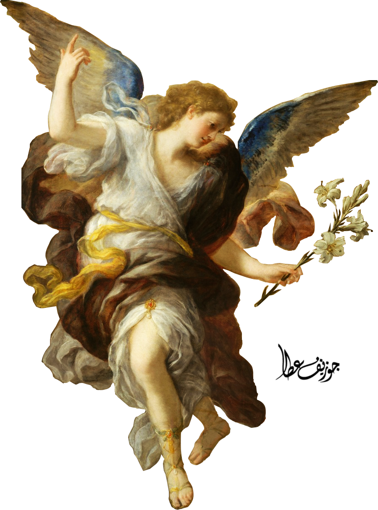

Art
Art is a diverse range or product of human activity involving creative imagination to express technical proficiency, beauty, emotional power, or conceptual ideas.
Article

Art
Art is a diverse range or product of human activity involving creative imagination to express technical proficiency, beauty, emotional power, or conceptual ideas.
Painting
Painting is the practice of applying paint,
pigment, color or other medium to a solid
surface (called the "matrix" or "support").
The medium is commonly applied to the base
with a brush, but other implements, such as
knives, sponges,and airbrushes, can be used.
Statue
A statue is a free-standing sculpture in which the realistic, full-length figures of persons or animals or non-representational forms are carved or cast in a durable material such as wood, metal or stone.